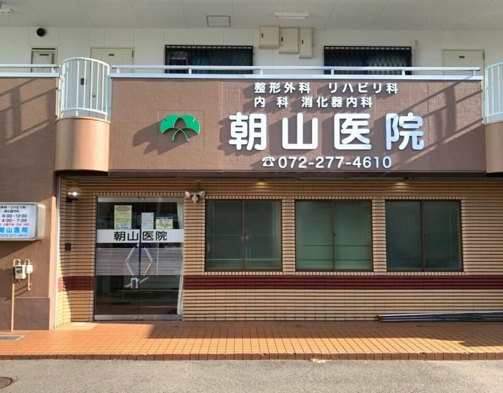
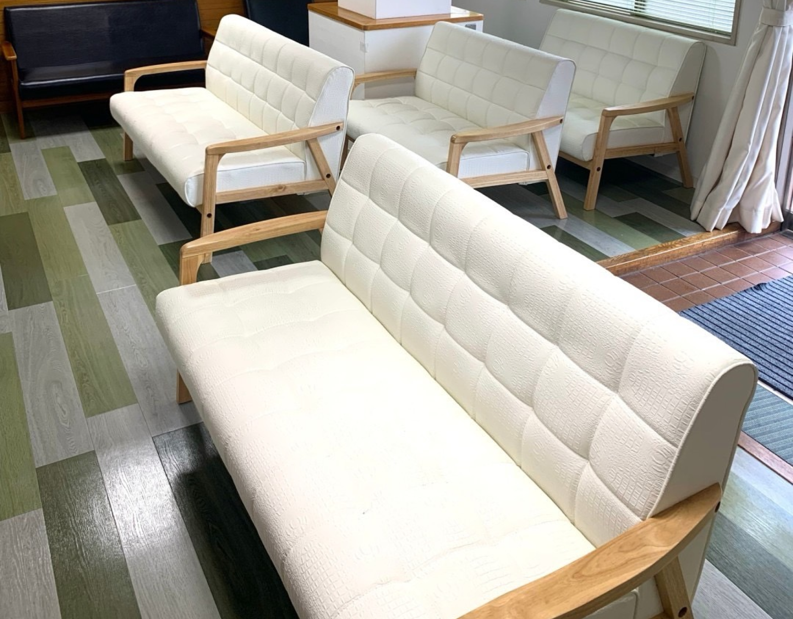
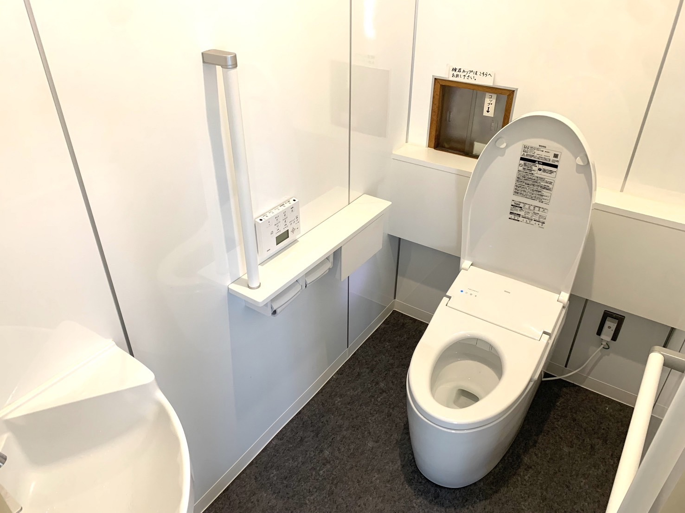
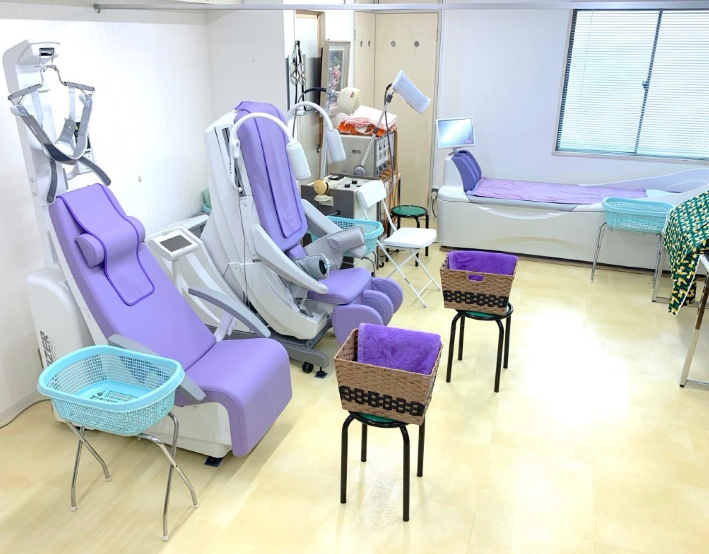
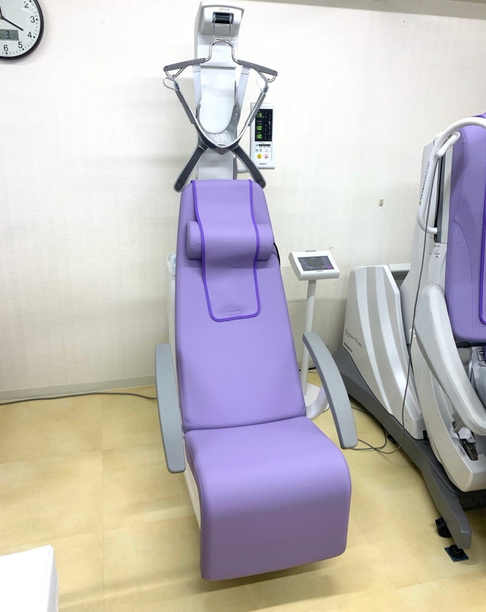
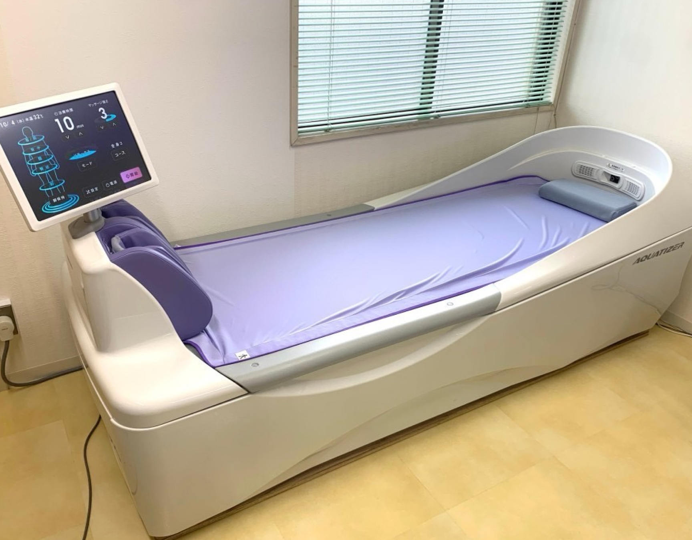
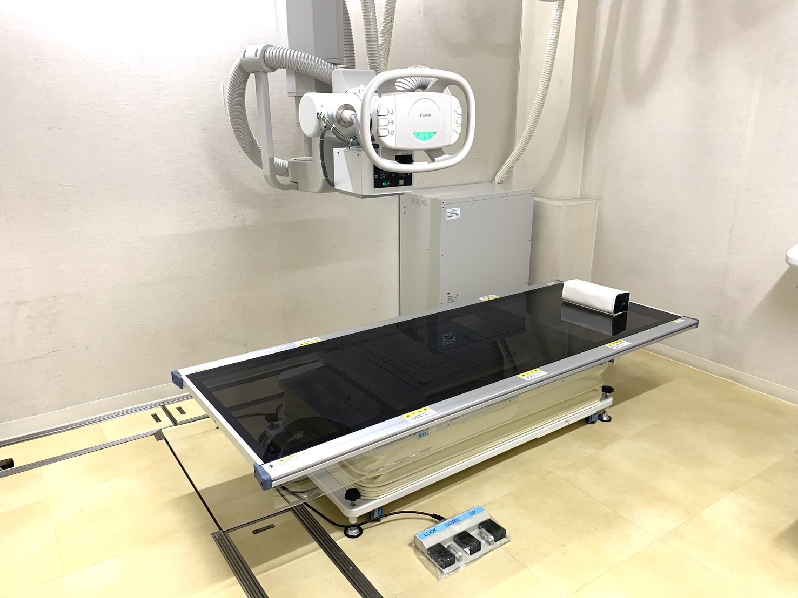
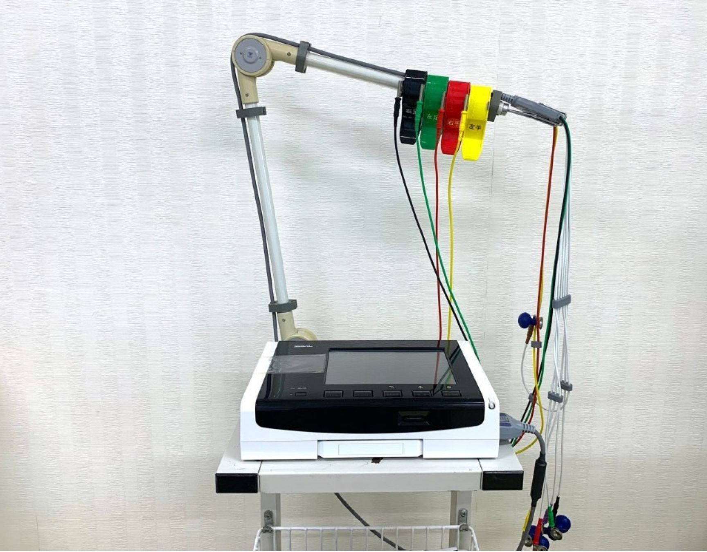
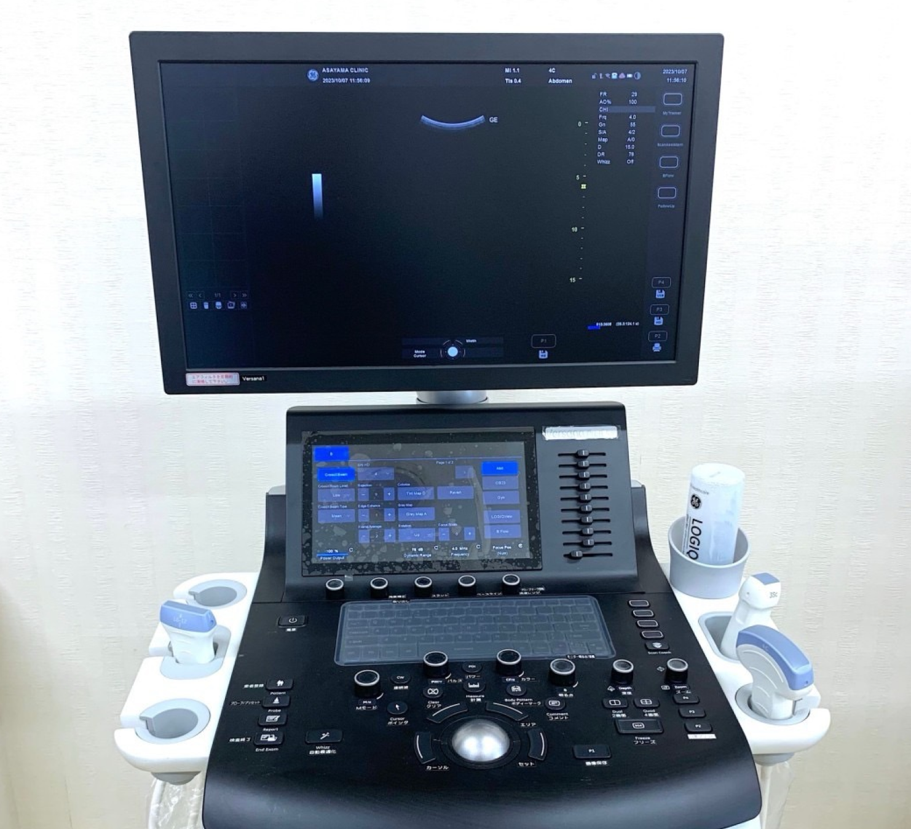

院内紹介INTRODUCTION

医院外観
ビル1階に開院しております。 暖かみのあるブラウン系の外壁です。

待合室
靴のままお入り下さい。
受付スタッフが笑顔でお待ちしております。

トイレ

リハビリテーションルーム
牽引器、 ウォーターベッド、 低周波治療器 マイクロ波治療器など、症状に適した治療を行うための機器を取り揃えています。

牽引機
頚椎・腰椎を牽引することにより、 椎間孔を拡開し、 神経根を除圧します。椅子に座った姿勢のまま楽に治療を受けて頂けます。

ウォーターベッド
水圧刺激によるマッサージ効果によって血行の改善を促進し、筋肉の緊張も緩和します。 リラクゼーション効果に優れています。

レントゲン
高画質・高精細なデジダル画像は正確でスピーディな診断に役立ちます。
健康診断や骨粗鬆症の検査にも用います。

心電計
心臓の電気信号を記録することで、 不整脈や狭心症、心筋梗塞など心疾患のスクリーニング 検査に用います。

超音波検查器
皮膚を通して心臓 腹部 関節 血管などを検査します。
放射能の心配がなく、 痛みを伴わずに検査できる事も特徴です。